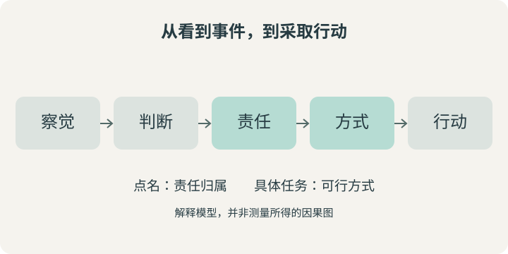
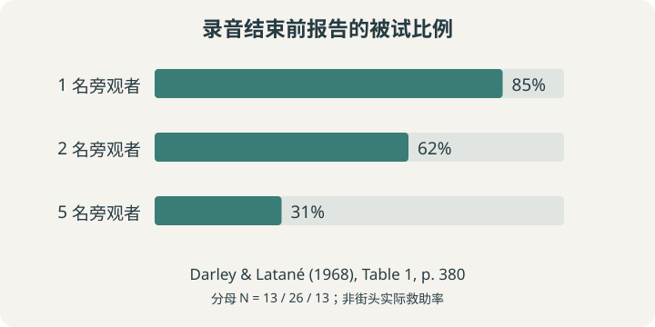

01｜从一个摔倒的人开始
设想你在街上摔倒，周围有几个人。喊“谁能帮我一下？”与看向一个人说“穿蓝衣服的朋友，请帮我叫救护车”，哪种更容易得到响应？这是一个研究问题，而不是已经观察到的个案。
两个请求可能同时改变了接收者、任务清晰度和事件严重性的判断。因此，不能仅凭一个故事断定责任扩散是唯一原因。本文研究的是群体规模如何影响个人行动、点名是否能缩短响应，以及现实场景中整个群体是否更可能提供帮助。
02｜责任为何在群体中消失？
旁观者效应描述的是他人在场可能抑制个体助人行为的情境效应。责任扩散是其中一种机制：我知道别人也能行动，便可能认为自己不是必须行动的人。另有三条候选机制：把别人的平静误当成情况不严重（多元无知）；担心误判或被评价；不确定怎样提供帮助。它们可能同时出现，但不能从沉默反推某人的内心。[S1][S3]
将助人过程拆为五个关口：察觉事件、判断是否需要帮助、承担责任、确定可行方式、真正行动。点名主要针对责任归属；明确任务主要降低行动不确定性；说明紧急程度针对情境判断。任何一关都可能失败。

03｜1968年的实验究竟测量了什么？
Darley 与 Latané 让被试通过隔离的通话设备参加讨论，播放模拟发作的录音，并操纵被试以为还有多少人听见。结果是被试离开隔间报告事件的时间及是否报告，而不是治疗成功率。[S1]
| 被试认为的旁观者人数（含自己） | 表1样本 N | 发作录音结束前报告 |
|---|---|---|
| 1 | 13 | 85% |
| 2 | 26 | 62% |
| 5 | 13 | 31% |

该实验支持感知群体规模影响个体及时报告；并没有直接比较街头摔倒时点名与泛泛呼救，更不能将实验比例当成任何城市的实际救助概率。
04｜点名为何有用？直接证据在哪里？
Markey 在2000年发表的聊天室研究直接比较了点名求助与不点名求助：前者平均获得回应用时36.38秒，后者51.53秒。差值为15.15秒。这比用1968年实验间接推断点名效果更贴近研究问题，但仍是网络情境而非医疗急救。[S2]
推论：点名使任务的潜在责任人更容易识别自己就是被请求者；具体任务又让其知道怎样行动。我们尚不能量化两者各自贡献，也不能保证被指定者有能力或愿意帮忙。
可操作句式是“可识别对象＋明确动作＋确认反馈”。例如：“穿蓝外套的朋友，请帮我拨打当地急救电话，告诉接线员我们的位置；拨通后告诉我。”若对方不能完成，应寻找其他人，而不是等待唯一对象。
05｜反证：人多未必更危险
Fischer 等2011年汇总105个独立效应量、超过7700名参与者，固定效应模型得到 Hedges’ g = −0.35；在危险明显、旁观者可提供身体支持等条件下，负向效应可减弱。g 是标准化效应量，不是下降35个百分点。[S3]
Philpot 等研究英国、荷兰、南非的219个监控记录公共冲突事件，约九成至少有一人干预，且更多旁观者与更高的事件级干预概率相关。该观察研究不是随机实验，也不能外推至所有跌倒或急救情境。[S4]
两者并不必然冲突：一个估计个体行动倾向，一个估计事件中至少有人帮助的概率。后者还受到人数、事件性质、群体关系和协调条件影响。
06｜一个最小概率模型：个人与群体的区别
假设 n 名旁观者独立行动，每人在给定时间内提供帮助的概率均为 p，则至少一人帮助的概率为：
Q = 1 − (1 − p)n
下表为纯教学假设，不是实测值。现实中的行为相互影响，独立性和同质性通常不成立。
| 人数 n | 个体概率 p（假设） | 至少一人帮助 Q |
|---|---|---|
| 1 | 50% | 50.0% |
| 2 | 35% | 57.8% |
| 5 | 20% | 67.2% |
| 5 | 5% | 22.6% |
前3行说明个人倾向下降可以和群体获助概率上升并存；最后一行说明责任扩散足够强时，群体获助概率也可能下降。1968年论文第380页脚注3已讨论同类计算。[S1]
如果每个人都依据同一错误信号判断事件，行动高度相关，此公式就会失效。还应观察首次响应时间、援助质量和有效救援，而不只是有人出手。
07｜现实求助与组织管理：让责任可执行
若有人突然倒地，先确保现场安全，迅速联系当地急救服务，遵循调度员指示；对可能有严重损伤的跌倒者，不宜贸然搬动。红十字会对疑似心脏骤停建议呼叫急救、安排获取AED并进行适当CPR。[S5] 这不是要求旁观者实施超出能力的操作。
| 场景 | 模糊请求 | 可执行请求 |
|---|---|---|
| 现场求助 | 谁来帮忙？ | 指定一人呼叫急救，另一人联系工作人员 |
| 项目故障 | 大家处理一下 | 指定协调负责人、修复人、反馈时间和升级路径 |
| 会议决议 | 大家跟进 | 明确交付物、负责人、截止时间和确认方式 |
| 跨部门协作 | 各部门共同负责 | 明确最终协调人、权限、支持者与替补机制 |
管理上的迁移属于机制类比而非已证实的组织干预。指定负责人必须匹配权限、资源和工作负荷；否则只会形成单点失效或替罪羊。多人协作仍需共享信息和备援。
闭环示例：发出请求 → 责任人确认 → 执行 → 反馈结果 → 未确认或超时则升级。衡量组织改进时，可比较首次确认时长、漏办率、重复执行率及任务质量，而非只看回复速度。
08｜证据边界与可检验的下一步
事实：特定实验中感知旁观者增加降低个人及时报告比例；聊天室点名与较短响应时间有关；公共冲突研究的事件级结果与简单的群体冷漠叙事不符。
推论：明确接收对象与任务有可能减少责任不确定性，但机制贡献尚不能分离。假设：点名和任务具体化的组合可能提高及时响应。未知：不同文化、年龄、紧急程度和任务风险下的真实效果，以及对救援质量的影响。
可用伦理审查后的非紧急模拟任务，采用2×2设计（点名/不点名 × 具体/模糊任务），预先指定响应时长、成功率、质量和组内相关性，比较交互效应；真实医疗事件不应为了研究而延迟求助。现阶段没有完成这样的新实验。
结论：不要把群体沉默一律解释为冷漠。把不明确的请求转化成可识别、可执行、可反馈的任务，是一种有研究线索支持的策略；但群体规模、情境风险和救援能力仍然重要。
相关研究
一个人，一个新部门：责任与授权；博弈论与组织权力：协调与激励。
参考资料
- Darley & Latané (1968). Bystander intervention in emergencies: Diffusion of responsibility. JPSP 8(4), 377–383. Table 1, p. 380；方法 pp. 378–379。访问日期：2026-11-25。
- Markey (2000). Bystander intervention in computer-mediated communication. Computers in Human Behavior 16, 183–188. Results；点名与未点名的平均响应时间。访问日期：2026-11-25。
- Fischer et al. (2011). The bystander-effect: a meta-analytic review on bystander intervention in dangerous and non-dangerous emergencies. Psychological Bulletin. Abstract；固定效应汇总及危险情境调节。访问日期：2026-11-25。
- Philpot et al. (2020). Would I be helped? Cross-national CCTV footage shows that intervention is the norm in public conflicts. American Psychologist 75(1), 66–75. Abstract；219个公共冲突事件。访问日期：2026-11-25。
- American Red Cross. Sudden Cardiac Arrest: How to Respond. 急救呼叫及AED指引；不属于效果实验。访问日期：2026-11-25。